EA Play
Триумфальные, удивительные и судьбоносные моменты ждут вас в коллекции лучших игр EA на PlayStation, в том числе в EA SPORTS FC, F1, The Sims, STAR WARS и других знаменитых сериях.
🎮 Игры в коллекции
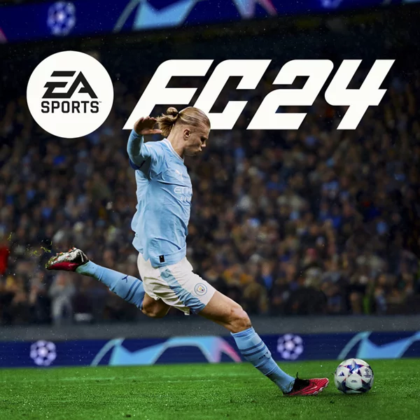
EA SPORTS FC 24
Футбольный симулятор,ставший наследником серии FIFA, выпущенный 29 сентября 2023 года. Игра сохранила основные лицензии (более 19 000 игроков, 700+ команд, 30+ лиг), предложив улучшенную физику, технологию HyperMotion V, систему игровых стилей PlayStyles.
UFC 4
Реалистичный спортивный симулятор ММА от EA Sports с улучшенной физикой, графикой и обновленной системой клинча/партера (технология RPM). Главной особенностью стала единая система прогрессии, позволяющая развивать созданного персонажа во всех режимах — от дворовых боев до чемпионата.
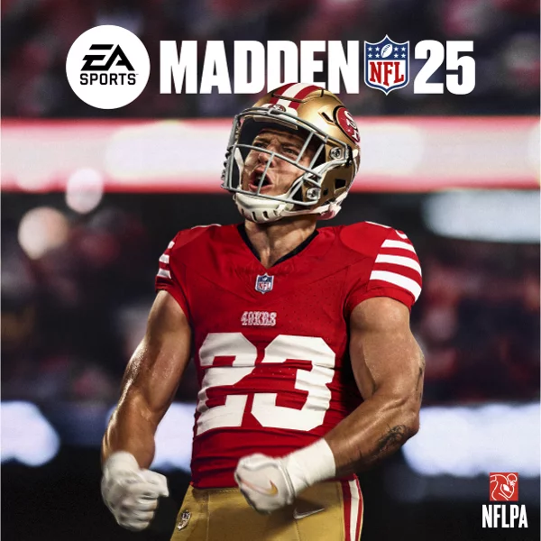
Madden NFL 25
Cимулятор американского футбола от EA Sports, отличающийся улучшенной физикой, системой движений и управлением. Игра предлагает обновленную систему «BOOM Tech» для реалистичных столкновений, улучшенный геймплей с акцентом на выносные удары и обновленные режимы карьеры, такие как «Франшиза» и «Суперзвезда».
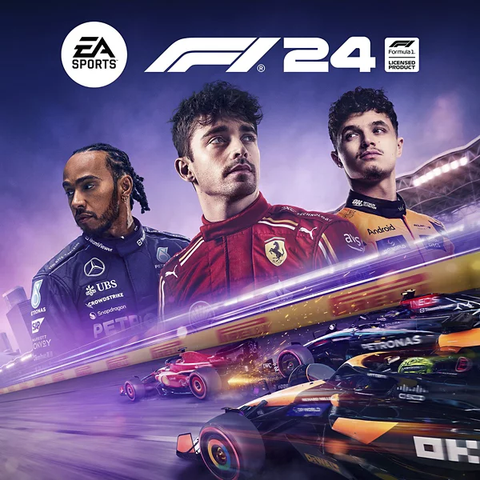
F1 24
официальный гоночный симулятор чемпионата мира Формулы-1 2024 года, выпущенный 31 мая 2024 года. Игра отличается обновленной системой карьеры, улучшенной физикой EA SPORTS Dynamic Handling для лучшего контроля болида и переработанными трассами, такими как Сильверстоун. Включает актуальные составы команд, пилотов и поддержку VR-режима.
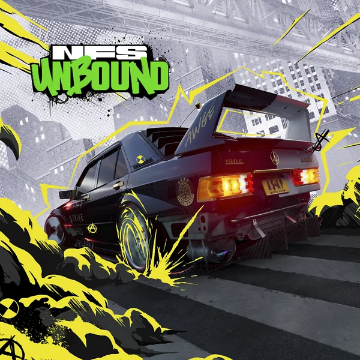
Need for Speed Unbound
Аркадный гоночный симулятор с уникальным стилем, совмещающим реалистичные авто и граффити-эффекты. Действие разворачивается в городе Лейкшор, где игроку предстоит пройти путь от новичка до чемпиона, участвуя в уличных гонках, уходя от полиции и кастомизируя машины, чтобы выиграть главное соревнование — The Grand.
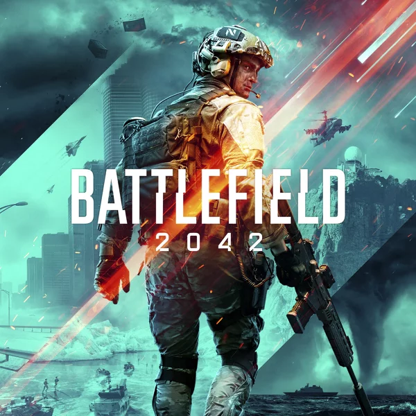
Battlefield 2042
Многопользовательский шутер от первого лица (2021), переносящий игроков в охваченный климатическими катастрофами 2042 год, где США и Россия сражаются за ресурсы. Главная особенность — масштабные бои до 128 игроков с динамической сменой погоды, разрушениями и использованием футуристической техники.
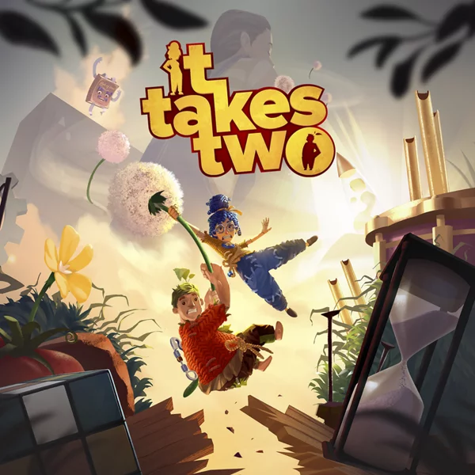
It Takes Two
Кооперативная приключенческая игра (платформер-головоломка) созданная исключительно для двух игроков. Сюжет рассказывает о семейной паре Коди и Мэй, которые на грани развода превращаются в кукол и вынуждены вместе преодолевать сказочные препятствия, чтобы вернуть свои тела и наладить отношения.

Star Wars Jedi: Survivor
Приключенческий экшен 2023 года, продолжение Fallen Order. Действие происходит через 5 лет, Кэл Кестис — опытный джедай, сражающийся с Империей. Игра предлагает более масштабный открытый мир, улучшенные боевые механики, новые стойки со световым мечом и глубокую кастомизацию героя.
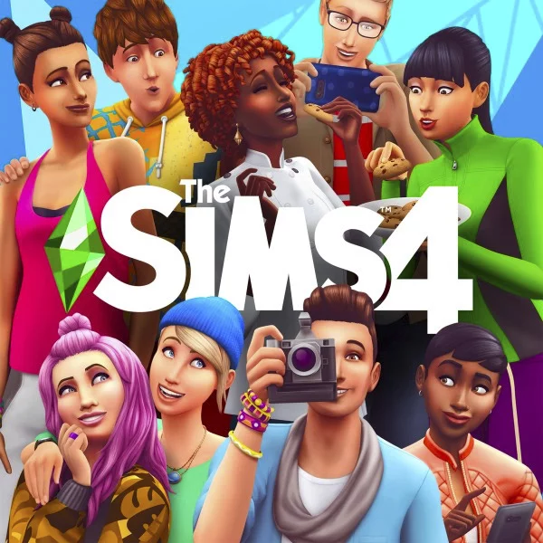
The Sims 4
Популярный симулятор жизни (песочница), где игроки создают уникальных персонажей (симов), строят дома и управляют судьбами героев без фиксированного сюжета. Основной акцент сделан на эмоциях, социальном взаимодействии, карьерном росте и творческом моделировании внешности и интерьеров. Базовая игра бесплатна.
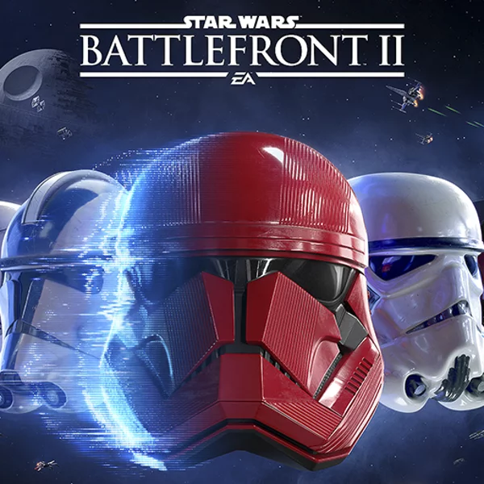
Star Wars Battlefront II
Масштабный шутер от первого/третьего лица во вселенной «Звездных войн», охватывающий все эпохи саги. Игра предлагает сюжетную кампанию за имперского спецназовца Иден Версио, разрушение Империи и масштабный мультиплеер (до 40 игроков) с наземными и космическими битвами, героями и классами войск.
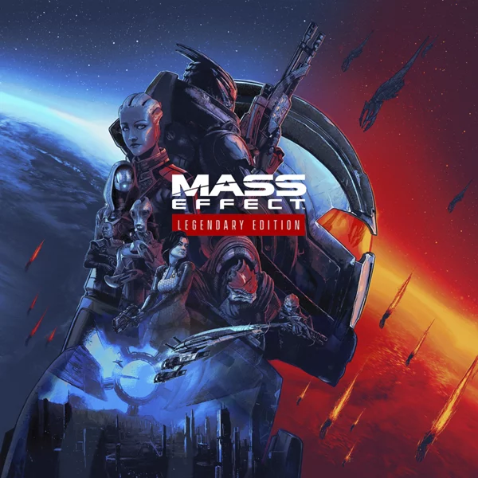
Mass Effect Legendary Edition
Ремастер-сборник знаменитой космической трилогии, включающий все три игры (Mass Effect 1-3) с обновленной графикой (4K), улучшенным звуком и оптимизацией. Издание содержит более 40 сюжетных и бонусных DLC, объединенных в единое приключение
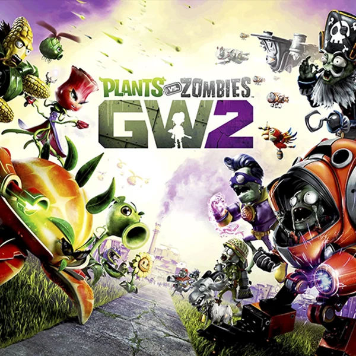
Plants vs. Zombies: Garden Warfare 2
безумный командный 3D-шутер, где растения отвоевывают у зомби захваченный пригород (Зомбурбию). В отличие от первой части, здесь растения перешли в наступление. Игра предлагает яркую мультяшную графику, классовые битвы (24 игрока), одиночный режим и хаб «Backyard Battleground».
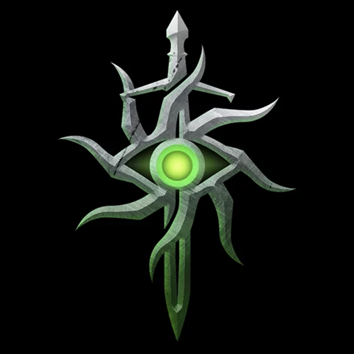
Dragon Age: Инквизиция
масштабная Action/RPG, где игрок возглавляет Орден Инквизиции, чтобы остановить гражданскую войну и закрыть «Прорыв» — разрыв в небе, выпускающий демонов в мир Тедас. Герой путешествует по огромным локациям, собирает команду, принимает важные политические решения и объединяет фракции.
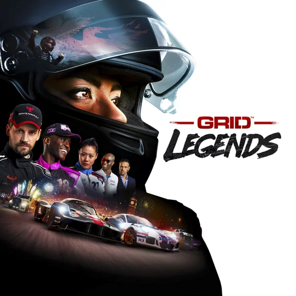
GRID Legends V
динамичная аркадная гоночная игра от Codemasters и EA, ориентированная на напряженные заезды, сюжетный режим «Driven to Glory» и широкий выбор авто. Игра предлагает более 130 трасс, включая реальные и городские локации (Лондон, Москва), возможность создавать собственные гонки, а также кроссплатформенный мультиплеер на 21 участника.
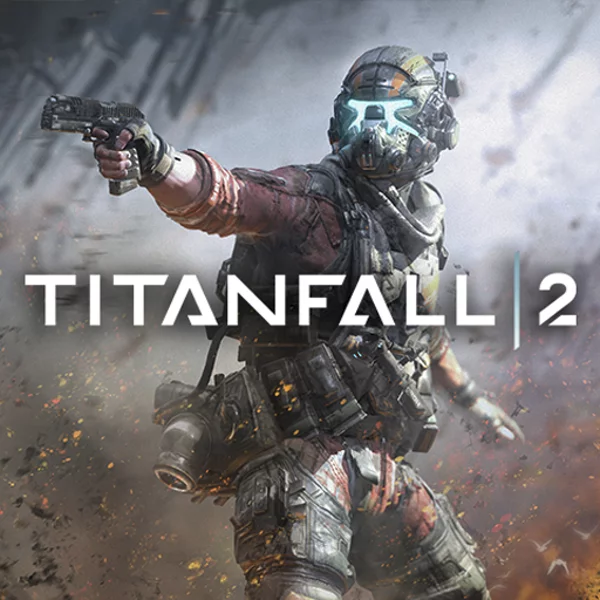
Titanfall 2
динамичный шутер от первого лица 2016 года, сочетающий сверхскоростные бои пехоты («Пилотов») с управлением огромными боевыми роботами («Титанами»). Сюжет рассказывает о рядовом Джеке Купере и его титане BT-7274, противостоящих корпорации IMC, а мультиплеер славится быстрыми матчами и отзывчивым управлением.
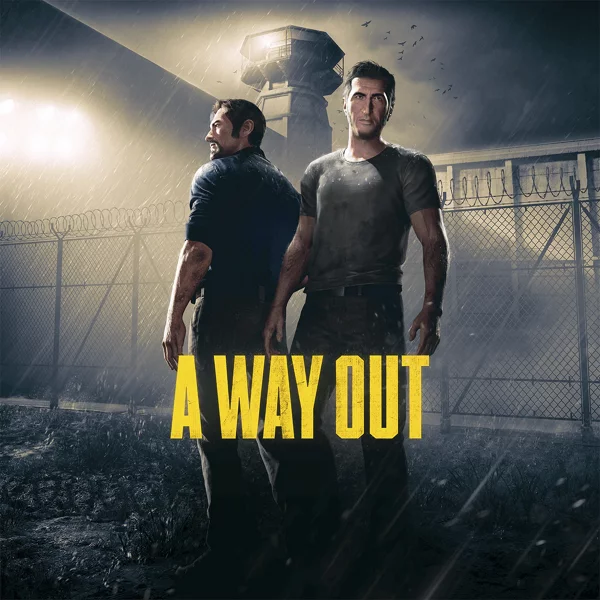
A Way Out
кинематографичный кооперативный action-adventure, созданный исключительно для игры вдвоем (split-screen или онлайн). Игроки управляют заключенными Лео и Винсентом, которые объединяются для побега из тюрьмы и скрываются от властей. Геймплей построен на взаимодействии: персонажи совместно решают головоломки, участвуют в погонях и перестрелках, при этом их роли постоянно меняются.
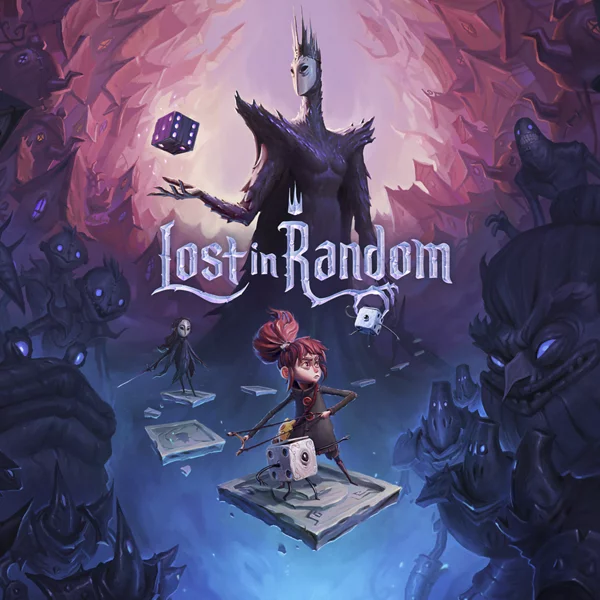
Lost in Random
Готическое экшн-приключение в стиле мрачных сказок Тима Бёртона. История рассказывает об Ивен, которая ищет свою сестру Одд в мире, поделенном на 6 зон и подчиненном диктату черных игральных костей. С помощью живого кубика Дайси она сражается в уникальных боях, сочетающих карты, тактику и случайность.
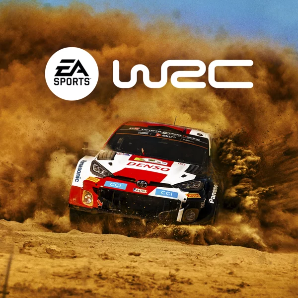
EA Sports WRC
раллийный симулятор от Codemasters и EA Sports, основанный на движке Unreal Engine. Игра предлагает реалистичную физику, более 600 км уникальных спецучастков, машины классов WRC, WRC-2 и Junior WRC сезона 2023, а также режим конструктора для создания собственного авто. Это глубокий симулятор с кроссплатформенным мультиплеером.
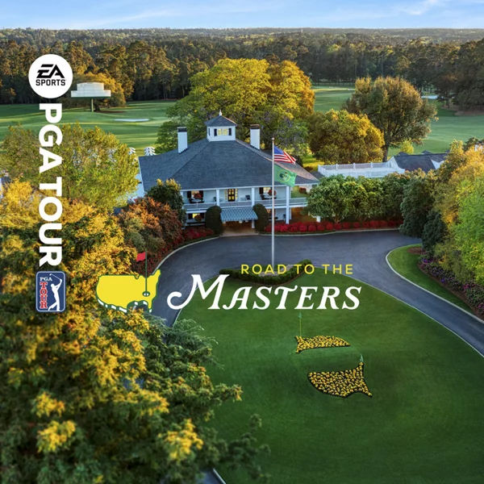
EA Sports PGA Tour
реалистичный симулятор гольфа, являющийся эксклюзивным домом для всех четырёх мейджор-турниров (Masters, PGA Championship, U.S. Open, The Open). Игра отличается высокой детализацией 30+ полей на движке Frostbite™, системой ударов «Pure Strike» (на основе ShotLink®) и режимом глубокой карьеры.
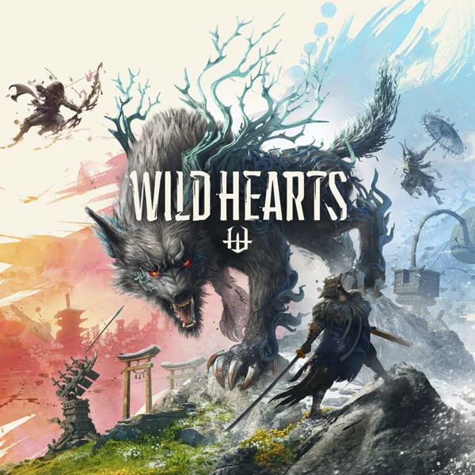